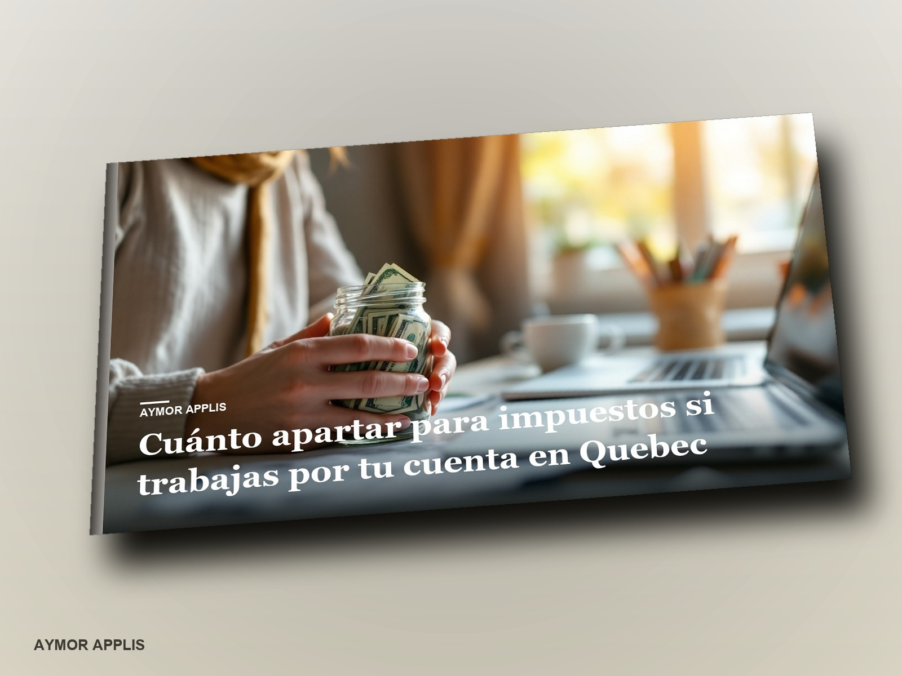

Le calcul complet que personne ne t'explique : impôt fédéral, impôt du Québec, Régime de rentes du Québec, RQAP, Fonds des services de santé, TPS et TVQ. Avec les chiffres officiels de 2026, la formule étape par étape, les tableaux par niveau de revenu, les acomptes provisionnels, les dépenses qui font vraiment baisser la facture et cinq cas réels chiffrés.
Le livre est en anglais, espagnol, français.
Pour qui travaille à son compte au Québec et veut savoir quoi mettre de côté pour les impôts avec les chiffres de 2026. Ce n'est pas un avis fiscal personnalisé, et les chiffres changent chaque année.
27,99 $ US Un seul paiement. Ne se renouvelle pas.
Si vous achetez pour votre entreprise, les lois de protection du consommateur ne s'appliquent pas. Ne la cochez que si c'est vrai.
AcheterCochez la case pour pouvoir payer.
Le bouton s'allume quand la direction ouvrira la boutique.